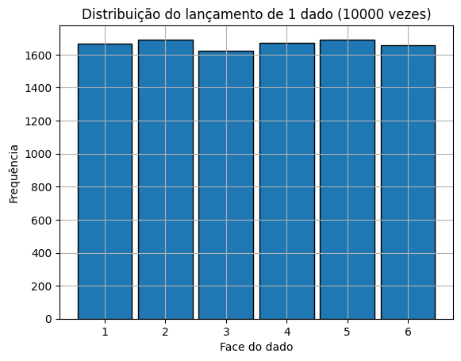
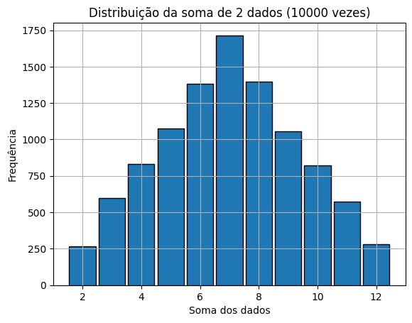
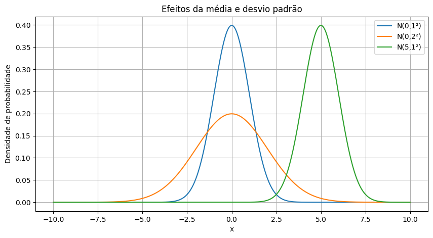
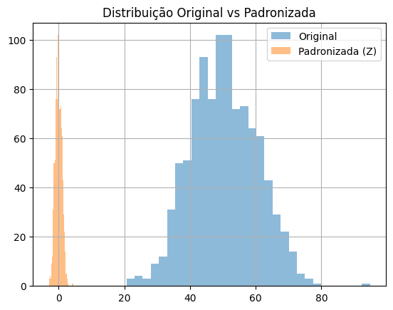
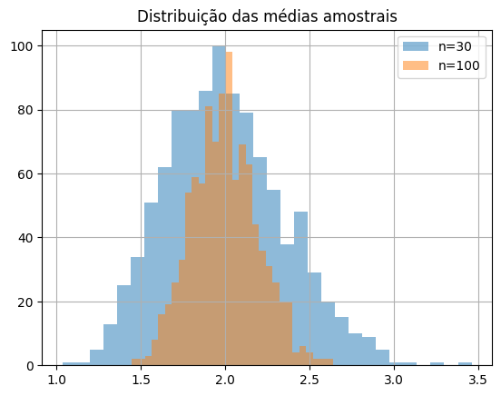
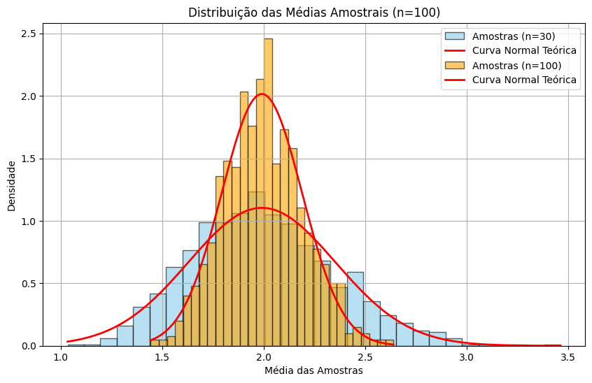

Bem-vindo à terceira aula do curso. Nesta aula, aprofundamos o estudo de distribuições, medidas estatísticas e visualizações úteis para compreender conjuntos de dados reais.
Distribuições Estatísticas e Teorema do Limite Central
Nesta aula prática, vamos explorar os conceitos fundamentais das distribuições estatísticas, com foco na distribuição normal e no Teorema do Limite Central.
Vamos utilizar simulações para entender os comportamentos típicos de distribuições discretas e contínuas, além de aplicar a padronização e calcular o erro padrão.
Parte 1 – Distribuições Discretas (Exemplo com Dados)
import numpy as np
import matplotlib.pyplot as plt
# Simulação de lançamento de 1 dado
np.random.seed(42)
dado = np.random.randint(1, 7, size=10000) # O que muda se modificar o tamanho do size?
plt.hist(dado, bins=np.arange(0.5, 7.5, 1), edgecolor='black', rwidth=0.9)
plt.title('Distribuição do lançamento de 1 dado (10000 vezes)')
plt.xlabel('Face do dado')
plt.ylabel('Frequência')
plt.grid(True)
plt.show()

# Lançamento de 2 dados e soma dos valores
dado1 = np.random.randint(1, 7, size=10000)
dado2 = np.random.randint(1, 7, size=10000)
soma = dado1 + dado2
plt.hist(soma, bins=np.arange(1.5, 13.5, 1), edgecolor='black', rwidth=0.9)
plt.title('Distribuição da soma de 2 dados (10000 vezes)')
plt.xlabel('Soma dos dados')
plt.ylabel('Frequência')
plt.grid(True)
plt.show()

Parte 2 – Distribuição Normal e seus Parâmetros
from scipy.stats import norm
x = np.linspace(-10, 10, 1000)
plt.figure(figsize=(10,5))
for mu, sigma in [(0,1), (0,2), (5,1)]:
y = norm.pdf(x, mu, sigma)
plt.plot(x, y, label=f'N({mu},{sigma}²)')
plt.title('Efeitos da média e desvio padrão')
plt.xlabel('x')
plt.ylabel('Densidade de probabilidade')
plt.legend()
plt.grid(True)
plt.show()

Parte 3 – Padronização da Normal (Z-score)
# Gerar dados normais
original = np.random.normal(loc=50, scale=10, size=1000)
# Padronização
z = (original - np.mean(original)) / np.std(original)
plt.hist(original, bins=30, alpha=0.5, label='Original')
plt.hist(z, bins=30, alpha=0.5, label='Padronizada (Z)')
plt.legend()
plt.title('Distribuição Original vs Padronizada')
plt.grid(True)
plt.show()

Parte 4 – Teorema do Limite Central
# Distribuição não normal (exponencial)
pop = np.random.exponential(scale=2.0, size=100000)
# Função para coletar médias de várias amostras
def amostras_medias(pop, n, num_amostras):
return [np.mean(np.random.choice(pop, size=n)) for _ in range(num_amostras)]
# Gerar médias de várias amostras
medias_30 = amostras_medias(pop, 30, 1000)
medias_100 = amostras_medias(pop, 100, 1000)
plt.hist(medias_30, bins=30, alpha=0.5, label='n=30')
plt.hist(medias_100, bins=30, alpha=0.5, label='n=100')
plt.title('Distribuição das médias amostrais')
plt.legend()
plt.grid(True)
plt.show()

Normalizando a curva podemos comparar com o que seria esperado teoricamente
from scipy.stats import norm
import matplotlib.pyplot as plt
import numpy as np
plt.figure(figsize=(10, 6))
# Parâmetros da população
mu = np.mean(pop)
sigma = np.std(pop)
# Histogramas com curvas teóricas para n = 30 e n = 100
for n, amostras, cor in [(30, medias_30, 'skyblue'), (100, medias_100, 'orange')]:
# Histograma das médias amostrais (densidade)
plt.hist(amostras, bins=30, density=True, color=cor, alpha=0.6, edgecolor='black', label=f'Amostras (n={n})')
# Curva normal teórica
x = np.linspace(min(amostras), max(amostras), 1000)
y = norm.pdf(x, loc=mu, scale=sigma / np.sqrt(n))
plt.plot(x, y, 'r-', linewidth=2, label='Curva Normal Teórica')
plt.title(f'Distribuição das Médias Amostrais (n={n})')
plt.xlabel('Média das Amostras')
plt.ylabel('Densidade')
plt.legend()
plt.grid(True)
plt.show()

Parte 5 – Erro Padrão da Média
# Comparando desvio padrão e erro padrão
n = 50
amostras = [np.mean(np.random.choice(pop, size=n)) for _ in range(1000)]
desvio_amostral = np.std(amostras)
erro_teorico = np.std(pop) / np.sqrt(n)
print(f'Desvio padrão das médias amostrais (estimado): {desvio_amostral:.4f}')
print(f'Erro padrão teórico: {erro_teorico:.4f}')